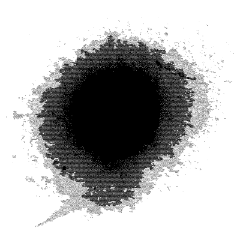

Забвение
Кажется, ничего не ждёт после жизни. Даже само ничто останется в стороне, в забвении. Организм разложится на простейшие частицы, душа больше не будет связана с нашим "Я".
Способность мыслить будущее рождает веру в жизнь после жизни. Но всё течёт в настоящем, каждое мгновение. И здесь же останется.
Это случится, рано или поздно, и мы ничего не поймём. Мы больше не будем знать, кто мы есть и кеми были когда-то.

2025-10-16